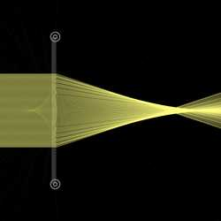
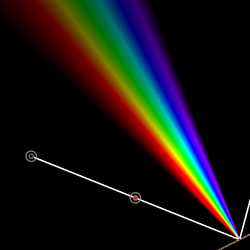
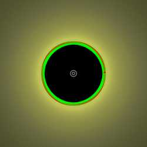
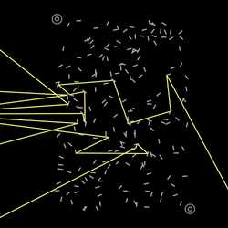
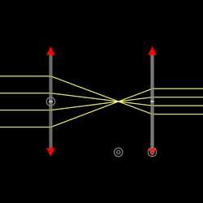
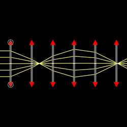
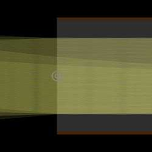

Soczewka Fresnela (FresnelLens)
Yi-Ting Tu
Soczewka Fresnela wykonana z półokrągłego kawałka szkła. Modułowa wersja tego przykładu z galerii.N_slice: The number of slicesrefIndex: The refractive index of the lens
Continuous spectrum light source (ContSpectrum)
Yi-Ting Tu
A light source with a uniform continuous spectrum discretized with a given constant step. Only works when "Simulate Colors" is on.min: The minimum wavelengthstep: The step of the wavelengthmax: The maximum wavelengthbrightness: The total brightness
Circular light source (CircleSource)
Yi-Ting Tu
A circle with uniform 180-degree point sources places along its circumference.r: The radius of the circleN: The number of point sourcesbrightness: The total brightness
Chaff (Chaff)
Stas Fainer, Yi-Ting Tu
A chaff of a rectangular shape consisting of random pieces of mirrors. Modularized version of this Gallery example.N: The number of mirrors in the chaffL: The length of the mirrors
Beam Expander (BeamExpander)
Yi-Ting Tu
The combination of two ideal lenses with the sum of their focal lengths equals their separation distance. They expand or reduce the diameter of a beam of collimated light. Modularized version of this Gallery example.
Ray Relay (RayRelay)
Stas Fainer, Yi-Ting Tu
A series of ideal identical lenses with focal length \(f\) and distance \(d\) between the lenses. A non-divergent ray trajectory is guaranteed if and only if \(d\leq 4f\). Modularized version of this Gallery example.f: The focal length of the lensesd: The distance between the lensesN: The number of lenses
Optical Fiber (OpticalFiber)
josephernest, Yi-Ting Tu
Line-shaped optical fiber with given core and cladding thickness and refractive indices.X: The thickness of the coreY: The thickness of the claddingn_1: The refractive index of the coren_2: The refractive index of the claddingModuły można tworzyć lub dostosowywać bezpośrednio w aplikacji internetowej, korzystając z wbudowanego edytora JSON. Zobacz samouczek. Dostosowywanie zaimportowanych modułów będzie miało wpływ tylko na bieżącą scenę.
Wnoszenie wkładu do powyższej listy jest mile widziane. Aby dodać swój moduł, zobacz Wnoszenie wkładu do modułów.